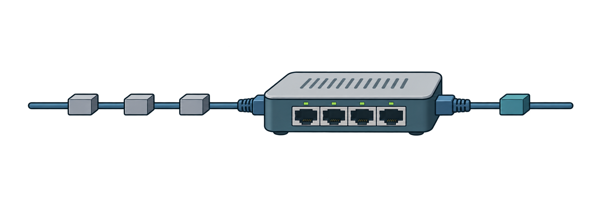
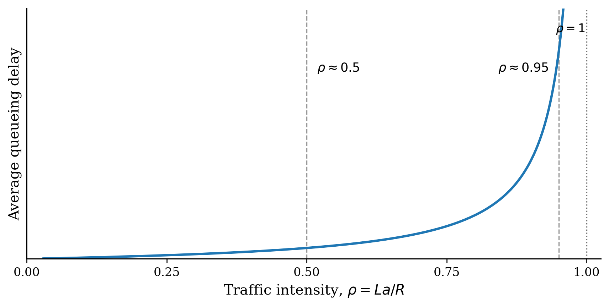

Problem 2. Packet Delay and Queueing (20 points)
(a) Delay at a busy output link [8 points]
All packets in this problem are 1,500 bytes long. Router R forwards packets to next hop B over a 6 Mbps FIFO output link. The link is 900 km long, the propagation speed is 2 x 10^8 m/s, and R takes 0.20 ms to process an arriving packet before it joins the output queue.
Packet P arrives at R and begins its 0.20 ms processing. When processing finishes, the output link is already transmitting a packet with 4,500 bits remaining, and three full packets are waiting ahead of P. Assume that no new arrivals affect P before it is transmitted. Compute P's queueing delay, transmission delay, propagation delay on the R-B link, and the total time from P's arrival at R until B receives its last bit. State the factors that determine transmission delay and propagation delay.

At the router: process P (0.20 ms), then wait for earlier traffic to clear the output.
Only then: transmit P itself. FIFO means first-in, first-out.
Illustrated packets are symbolic; the exact queue is shown below.
4500 bits are the remaining part of a packet, not another whole 1500-byte packet.
P’s own 2 ms transmission is separate from queueing. FIFO prevents P from overtaking the packets already ahead.
Problem 2. Packet Delay and Queueing (20 points)
(a) Delay at a busy output link [8 points]
Packet P arrives at R and begins its 0.20 ms processing. When processing finishes, the output link is already transmitting a packet with 4,500 bits remaining, and three full packets are waiting ahead of P. Assume that no new arrivals affect P before it is transmitted. Compute P's queueing delay, transmission delay, propagation delay on the R-B link, and the total time from P's arrival at R until B receives its last bit. State the factors that determine transmission delay and propagation delay.
A longer packet takes longer to send. A faster link sends the same packet sooner.
Distance and signal speed determine travel time, regardless of packet length.
Times above start when transmission starts. Earlier bits propagate while later bits are still being sent. To receive the entire packet, B must wait for the last bit.
Total: processing 0.20 + queueing 6.75 + transmission 2.00 + propagation 4.50 = 13.45 ms.
Problem 2. Packet Delay and Queueing (20 points)
(b) Traffic intensity and sustained congestion [6 points]
Suppose packets arrive at the same output queue at a long-run average rate of 350 packets/s. Compute the link service capacity in packets/s and the traffic intensity ρ = La/R. The arrival rate then increases to 525 packets/s and remains at that rate. Recompute ρ. Explain what the two values of ρ imply for long-run queueing behavior, and state the largest long-run arrival rate for which ρ < 1.
150 packets/s of average spare service can clear temporary bursts. This does not mean every packet avoids waiting.
25 packets/s accumulate. An infinite buffer grows without bound; a finite one eventually drops traffic.
The time steps illustrate sustained-rate accounting from no initial backlog; actual bursty arrivals need not occur evenly.
ρ < 1 requires a < 500 packets/s. No attained real-valued maximum; if integer rates are required, 499 packets/s.
Problem 2. Packet Delay and Queueing (20 points)
(c) Traffic intensity and queueing delay [6 points]
The plot below illustrates average queueing delay as the traffic intensity ρ = La/R increases. (i) Compare the operating conditions around ρ ≈ 0.5 and ρ ≈ 0.95. Why does queueing delay become much more sensitive to additional load as ρ approaches 1? (ii) If packet length L and link rate R remain unchanged, by what factor must the average packet arrival rate a increase to move the system from ρ = 0.5 to ρ = 0.95? (iii) Based on the plot, explain why operating a link continuously very close to ρ = 1 is undesirable even though the long-run offered rate has not yet exceeded the link capacity.

50% spare capacity is available to drain an extra burst.
Half the service capacity remains after ongoing traffic. Accumulated packets clear relatively quickly.
5% spare capacity is available to drain an extra burst.
Ongoing traffic leaves only 5% spare. A burst persists longer, increasing delay and making delay less predictable.
Drain lengths show a qualitative comparison, not measured time. A 1.9× arrival rate does not imply a 1.9× delay.